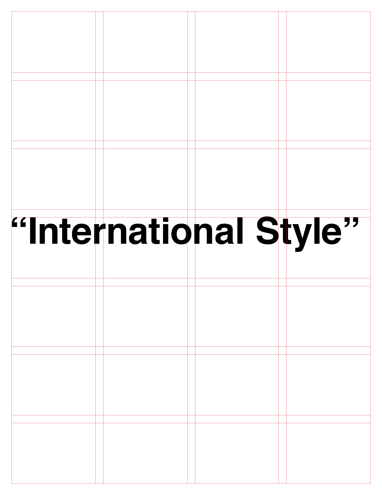

"Autoreply: Modernism"
Metahaven
2011-08-04
The Swiss International style is a controversial
topic in design. It is characterized by a basic
grid system with modular design. It has influenced
design movements on after and is criticized by
postmodernists.
